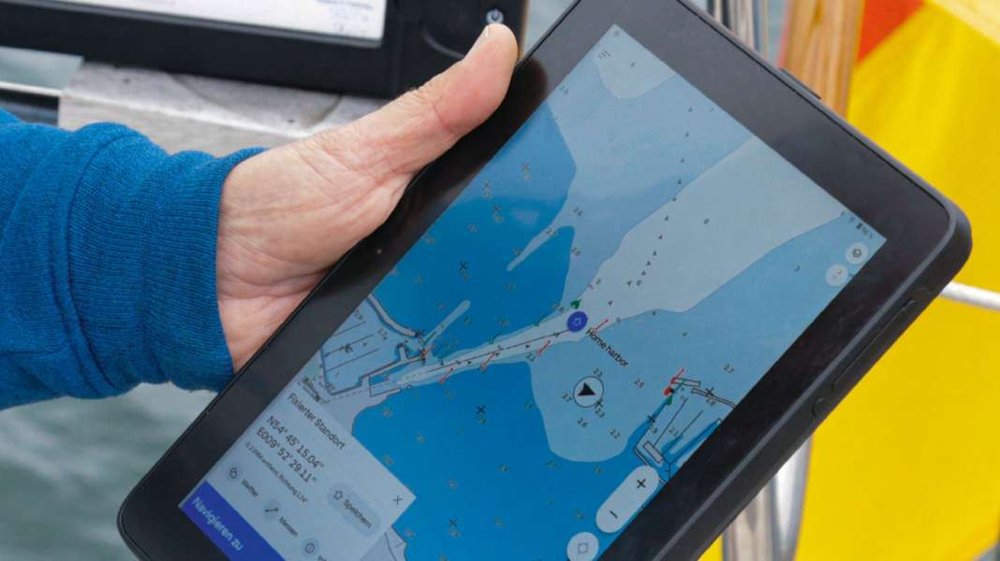

Tried out: Orca tablet - the navigation co-pilot for the cockpit. With a new price structure
Hauke Schmidt
· 11.03.2024

Sat nav apps such as Navionics or TZ iBoat from Nobeltec/Maxsea are generally easy to use. They also run on the smartphone or tablet that is on board anyway. However, it is precisely this hardware that can cause problems. The displays are usually weak in bright sunlight, and there is usually a lack of weather protection and endurance, or the device simply switches off at the height of summer due to excessive temperatures. On many yachts, the plotter and app therefore run in parallel.
This is where the Norwegian Orca system comes in, consisting of the app called Co Pilot, a waterproof Android tablet and the central unit called Core. The app is sufficient for navigation. It also runs on normal Android and iOS devices and, even with this standard hardware, offers a range of functions that are lacking in other applications. First and foremost the clear map image and weather routing.
Map image & navigation with the Orca tablet


The colour scheme of the nautical charts is very restrained, and depth contours beyond the set safety depth are shown paler, whereas shallow water areas are highlighted. This gives the chart a tidy appearance without completely losing information. The situation is similar with the beacons. Their sectors are comparatively small, but the separations are extended as dashed lines according to the range. In addition, the identification is noted directly on the beacon, just like on paper maps. Another trick is the scaling of the navigation marks and danger spots such as stones, which are highlighted in detailed views.
Wide range of data and free for other tablets
The charts are based on official data from the respective hydrographic institutes. A practical feature is that all sea areas are automatically included. The Norwegians currently offer coverage for large parts of Europe, the USA and the Caribbean. If you only want to use the charts online, you can navigate with the free version. A subscription is required for offline use. Originally, the map subscription could only be taken out together with the purchase of an Orca display or the -Core. The app can now also be used on its own, which also makes it interesting for charter sailors.
The Orca tablet can also do weather routing
Another advantage of the app is the weather routing function. In sailing mode, the software not only takes into account the current weather forecast, but also the boat's polar data. Instead of a direct course to windward, for example, the system specifies a realistic cross.
This works amazingly well and very quickly. Even longer trips, for example from the Flensburg Fjord to Figeholm in Sweden, 330 miles away, are calculated by the system in barely 30 seconds, including the approach through the winding archipelago fairway. This enables much more precise planning on longer legs with possible weather changes.
However, the software is not completely error-free, as traffic separation schemes are sometimes cut. In addition, the opening times are not stored for all bridges. For example, the app refused to calculate a route through the Strelasund, apparently the Ziegelgrabenbrücken is stored as a fixed crossing. However, all autorouting functions known to us so far have had similar problems.
Orca uses high-resolution forecasts from eight different weather services as the basis for routing. These include the Danish, Norwegian and Swedish services with their regional models, which are of interest for Northern Europe. The forecast is shown as route weather along the route. This seemingly simple display makes it clear how the conditions change during the course of the trip. You can choose between wind, weather phenomenon, current or swell. If that's not enough for you, you can sail the route in advance in the detailed view.
In addition to the weather information, the software needs to know how fast and high the yacht can sail. To do this, the Norwegians use the database of the ORC measurement system. The probability of finding a sister ship among the 7,000 data records is high. The values can be adjusted directly in the app, either individually in detail or as a lump sum using a scaling factor. A distinction is also made between day and night voyages and turning angles are defined.
The functions of the Orca display
The weather forecast is freshly downloaded from the Internet, so only normal autorouting and manual waypoint assignment are available in offline mode.


For our practical test lasting several weeks, we used the app with the Orca Display 2 and the Core. We also installed it on an old iPad Air 2 and an iPhone SE from 2020. Even with the old hardware, there were no crashes or stutters.
Orca scores points in on-board use
However, the Norwegians' 10-inch tablet has proven itself best on board. Thanks to the matt and very bright display, the nautical chart can be easily recognised even in the sun. It can also be used with polarised sunglasses without any problems. It is also waterproof and robust, but we would have liked a rubber coating to prevent it from slipping so easily when lying down.
Orca states that the battery capacity is sufficient for eight hours of operation. However, for intensive use in bright surroundings, you should plan for six hours of autonomous operation. The optional holder with integrated wireless charging function was not available to us. It costs 299 euros, but is recommended for continuous operation. We did not experience any thermal problems with the Orca display, as is the case with many tablets in summer. The connection to the boat is handled by the black box called Core. It has an NMEA 2000 connection, Wi-Fi and Bluetooth, as well as integrated GPS, compass, gyro and acceleration sensors. The latest version also supports the connection of Quantum radar antennas from Raymarine.
Autopilot, AIS and instruments


Instrument data on the Orca display
The display is connected to the core via Wi-Fi or Bluetooth, which also works with other tablets. The sensor values available to the on-board networks can then be compiled as data boxes or instrument pages. However, time plots are not yet available. The wind information is also displayed as laylines on the map, and the Core uses the heeling and acceleration data to correct wind display errors caused by boat movement.
If you have a Garmin, Raymarine or B&G autopilot on board, you can also operate it via the app with the help of the Core. This worked well, at least in the case of our Garmin GHP 10. Special feature here: When following a route, upcoming course changes can be confirmed up to 15 minutes in advance. This leaves your hands free during the actual manoeuvre.
Subscription model with three price levels
Orca's successful map display alone makes most plotters look outdated, especially as the display costs around 1,000 euros, the same as an entry-level plotter. The core costs 550 euros. The app itself is free and can be used with online maps. In Germany, Denmark and Sweden, however, it is only available for a short trial period, as the hydrographic institutes do not allow the free use of map data. The Plus subscription for 49 euros is required for offline use, weather routing, satellite overlay and some other functions. This is significantly less than plotter maps cost.
If you also want to use the extended online AIS with connection to the Marinetraffic image database, as well as the dynamic recalculation of routes and the automatic logbook, you also need the Smart Navigation subscription for 99 euros per year. This means that the maximum range of functions costs 148 euros per year. If you are already an Orca customer and have taken out the previous Premium subscription, you can continue to use it at the old conditions.
Even in the most expensive version, the investment for Orca is only that of a mid-range plotter. The system is therefore also a serious alternative in terms of price and also offers good weather routing.
Rating: 4 stars
This article was first published on 25 January 2024 and has since been updated with new information regarding the payment model.
More articles on tablet navigation:

Hauke Schmidt
Test & Technology editor